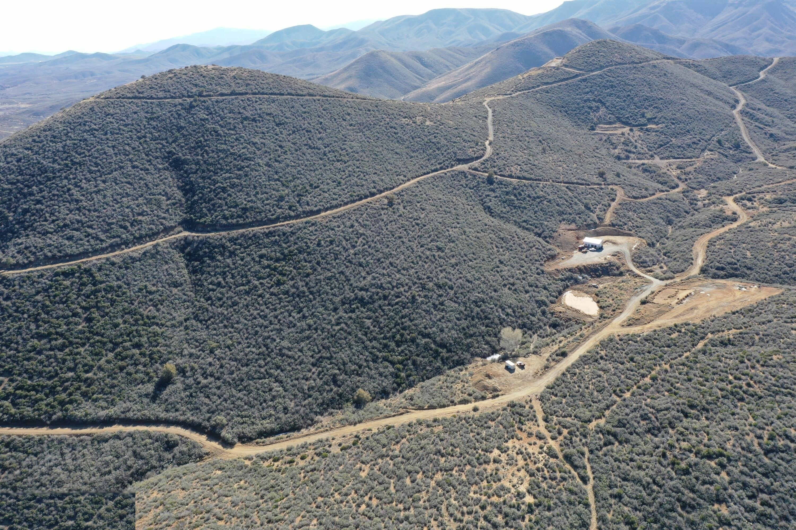

Goswick Ranch sits on the edge of the Bradshaw Ranger District of Prescott National Forest. Hundreds of miles of trail — for hikers, horseback riders, and OHV enthusiasts — begin within minutes of your front door.
The Bradshaw Ranger District borders Goswick Ranch on multiple sides, offering immediate access to one of Arizona's most varied national forests — from chaparral foothills to ponderosa pine ridge tops exceeding 7,900 feet.
Free dispersed camping is available throughout the Bradshaw District — 14-day limit, 100 ft from roads, 200 ft from water. No permit required.
Bradshaw Ranger District: (928) 443-8000

Big Bug Mesa rises to 6,926 feet at Five Corners, approximately 5–10 miles from Goswick Ranch via Poland Road. This high-elevation plateau is a hub for motorized recreation, hiking, and backcountry camping in the Bradshaws.
Five Corners is a crossroads of five forest roads — a natural hub where trails, OHV routes, and backcountry roads converge amid sweeping Bradshaw Mountain panoramas.
Goswick Ranch is RCU-2A zoned, which means horses and livestock are welcome. With 9-acre minimum lots and direct forest access, this is true equestrian country.
Over 450 miles of horse-accessible trails in Prescott National Forest. Trail system connects from the Bradshaw foothills to the Granite Mountain Wilderness and beyond.
30 miles away at 6,398 ft elevation. Each site has a 16'×16' steel corral and tether line for 2–4 horses. Connects to Wolf Creek Loop and Groom Creek Loop trails.
Guided trail rides available 7 minutes away in Mayer at Foothills Ranch. 1.5-hr to 3-hr excursions through Big Bug Creek, Grapevine Springs, and historic mine sites. Ages 5+.
7250 S State Route 69, Mayer, AZ 86333 · (928) 379-0260 · Open 7 days/week by appointment
1.5-hr ride: $95/person · 2-hr ride: $125/person · 3-hr ride: $250/person
Goswick Ranch falls within Arizona Game & Fish GMUs 20A and 20B — well-regarded units for diverse big game and upland bird hunting throughout the Bradshaw Mountains.
AZ hunting license: Resident $37/yr · Non-resident $55/yr — verify current rates at azgfd.com
Multiple fishable waters are accessible within 30–45 miles of Goswick Ranch, offering a range of species and settings from mountain lakes to reservoir fishing.
AZ fishing license: Resident $37/yr · Non-resident $55/yr — verify current rates at azgfd.com
Goswick Ranch's central location puts some of Arizona's most celebrated destinations within a comfortable day-trip range.
Historic gold mining town at 5,771 ft. Crown King Saloon, general store, 1917 schoolhouse, and breathtaking Bradshaw Mountain scenery along Senator Highway.
America's top-5 retirement destination. Whiskey Row, Courthouse Plaza, World's Oldest Rodeo (July), vibrant dining and arts scene at 5,368 ft elevation.
World-famous red rock formations, Tlaquepaque arts village, jeep tours, and dozens of hiking trails. A spectacular 45-minute drive south through Verde Valley.
Perched on Mingus Mountain, this National Historic Landmark was once Arizona's fourth largest city. Art galleries, wine, and the most dramatic hillside views in the state.
Free, 24/7 access to permanent river pools, cascades, and the Perry Mesa Archaeological Complex — Pueblo la Plata with ~100 rooms, built AD 1250–1450.
Over 30 wineries and tasting rooms in and around Cottonwood, Cornville, and Clarkdale. One of Arizona's fastest-growing wine regions, framed by red rock canyon scenery.
Arizona ranks among the top three states in the nation for bird diversity — over 550 species recorded statewide. Goswick Ranch's chaparral-to-ponderosa transition zone is precisely the elevation band that attracts the widest variety of species.
Raptors (golden eagle, red-tailed hawk), broad-tailed hummingbirds (breeding April–August), acorn and Lewis's woodpeckers, Steller's and scrub jays, mountain bluebirds in winter.
30–31 miles away. An Important Bird Area with 156 recorded species. Spectacular granite shorelines and year-round water attract exceptional diversity.